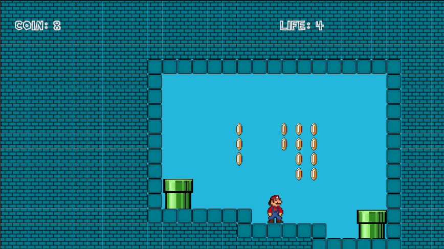
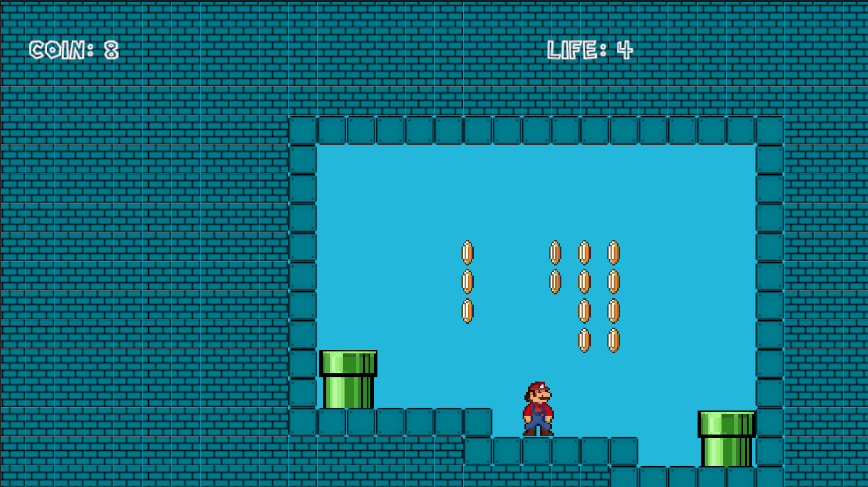

Mario Bros Gambey Noa
Version Française
Il s'agit d'une version html d'un README qui est technique et pas très jolie, je vous renvoie donc sur la page github HERE
Description
Ce jeu est un Mario Bros fait dans le cadre du projet de fin de module GameProg encadré par M. Bourdillon Rémi.
Captures d'écran / Vidéos
 


Fonctionnalités principales
- Déplacement: Avancer, reculer, sauter.
- Etat de Mario: Mario peut être petit, grand ou feu.
- Petit = 1: Mario peut sauter et avancer.
- Grand = 2: Mario peut sauter, avancer et tuer les ennemis en leur sautant dessus.
- Feu = 3: Mario peut sauter, avancer, tuer les ennemis en leur sautant dessus.
- Plante: Un ennemi qui se déplace selon un pattern.
- Collision: Si le joueur touche la plante, son état prend -1.
- Goomba: Un ennemi qui se déplace selon un pattern.
- Collision: Si le joueur touche le goomba, son état prend -1.
- Mort: Si le joueur lui saute dessus, le goomba meurt.
- Koopa: Un ennemi qui se déplace selon un pattern.
- Collision: Si le joueur touche le koopa, son état prend -1.
- Mort: Si le joueur lui saute dessus, le koopa meurt et laisse apparaître une carapace.
English Version
Description
This game is a Mario Bros made as part of the GameProg end-of-module project supervised by Mr. Bourdillon Rémi.
Screenshots / Videos
Main Features
- Movement: Move forward, backward, jump.
- Mario's State: Mario can be small, big, or fire.
- Small = 1: Mario can jump and move forward.
- Big = 2: Mario can jump, move forward, and kill enemies by jumping on them.
- Fire = 3: Mario can jump, move forward, and kill enemies by jumping on them.
- Plant: An enemy that moves according to a pattern.
- Collision: If the player touches the plant, their state decreases by 1.
- Goomba: An enemy that moves according to a pattern.
- Collision: If the player touches the goomba, their state decreases by 1.
- Death: If the player jumps on it, the goomba dies.
- Koopa: An enemy that moves according to a pattern.
- Collision: If the player touches the koopa, their state decreases by 1.
- Death: If the player jumps on it, the koopa dies and leaves behind a shell.